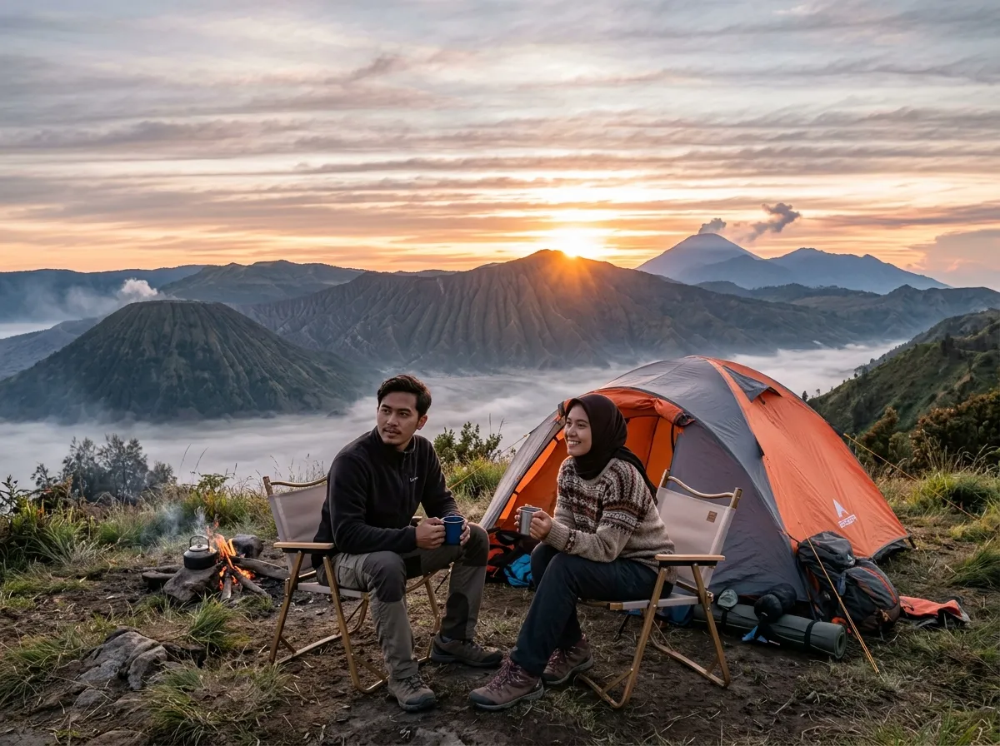
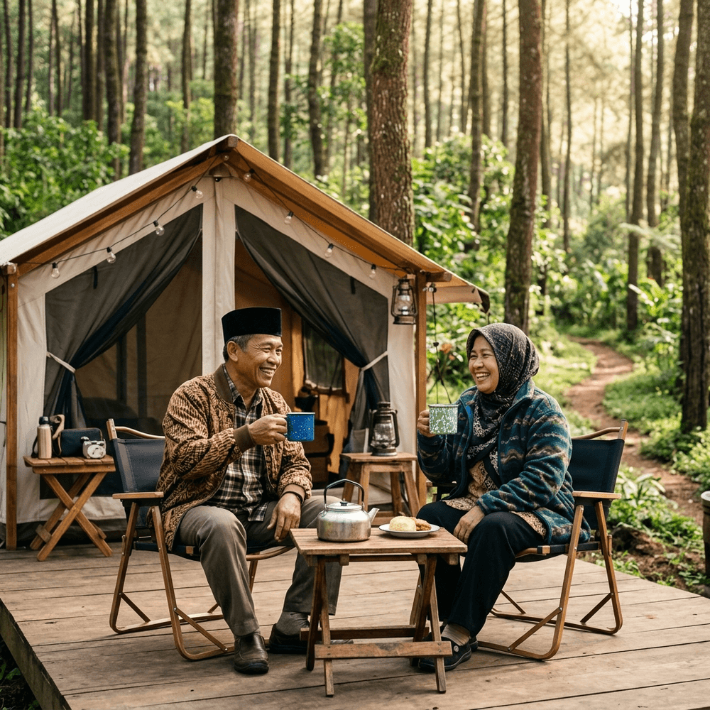
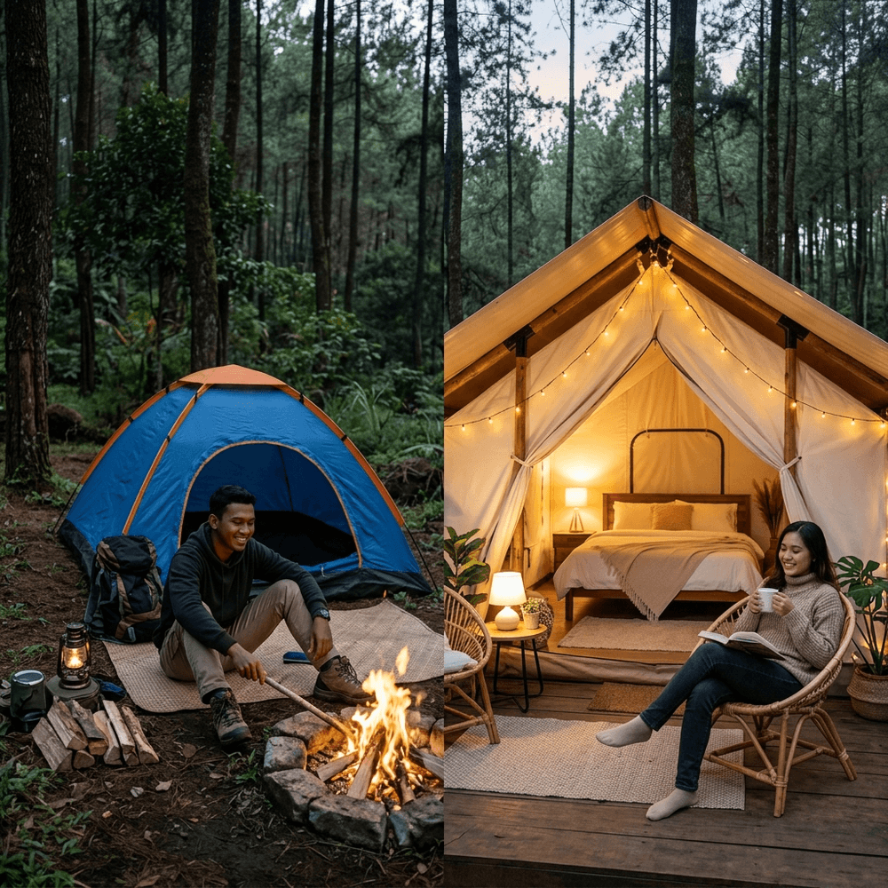
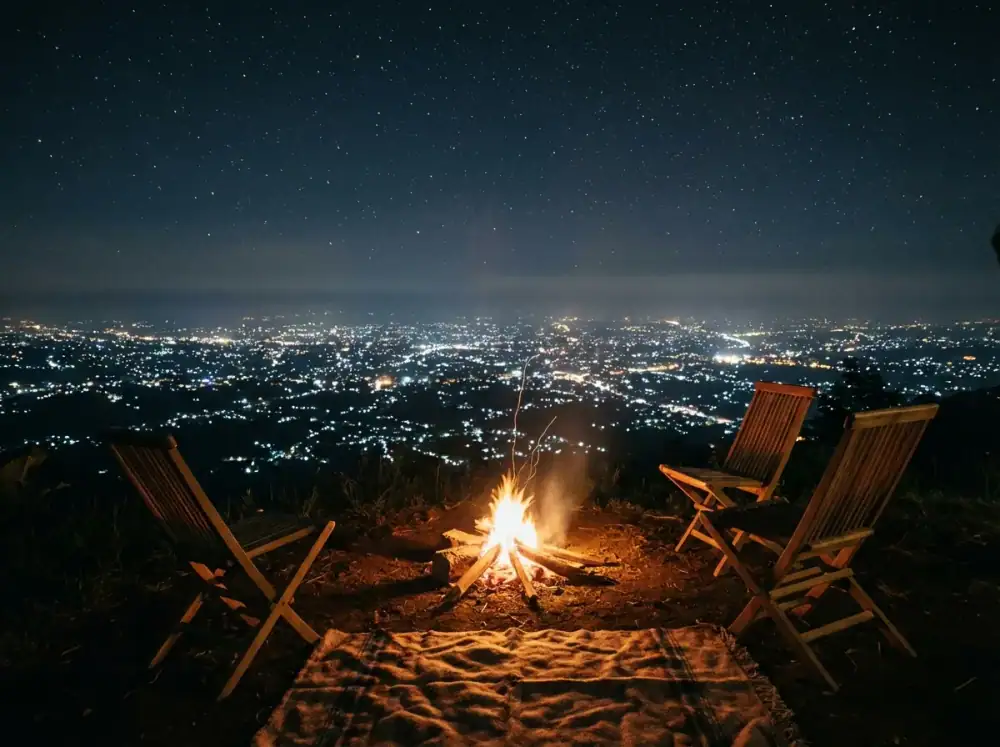
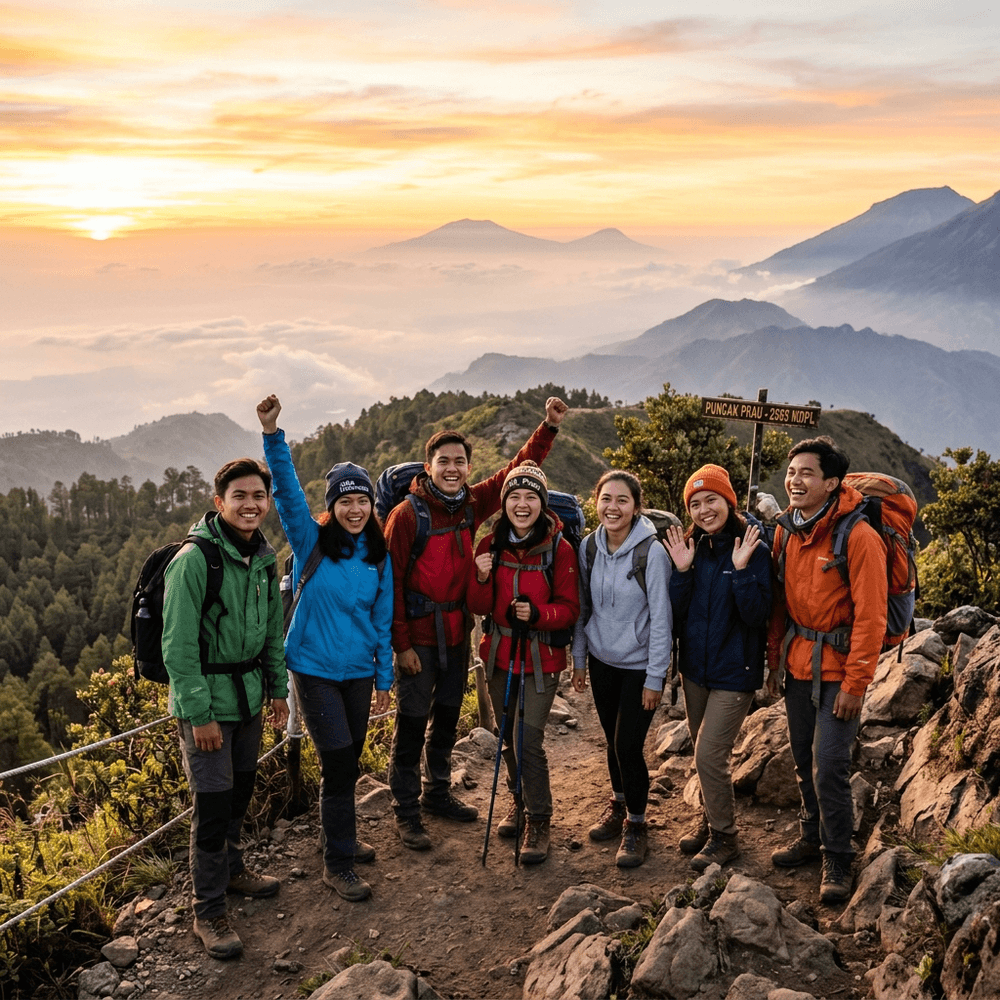
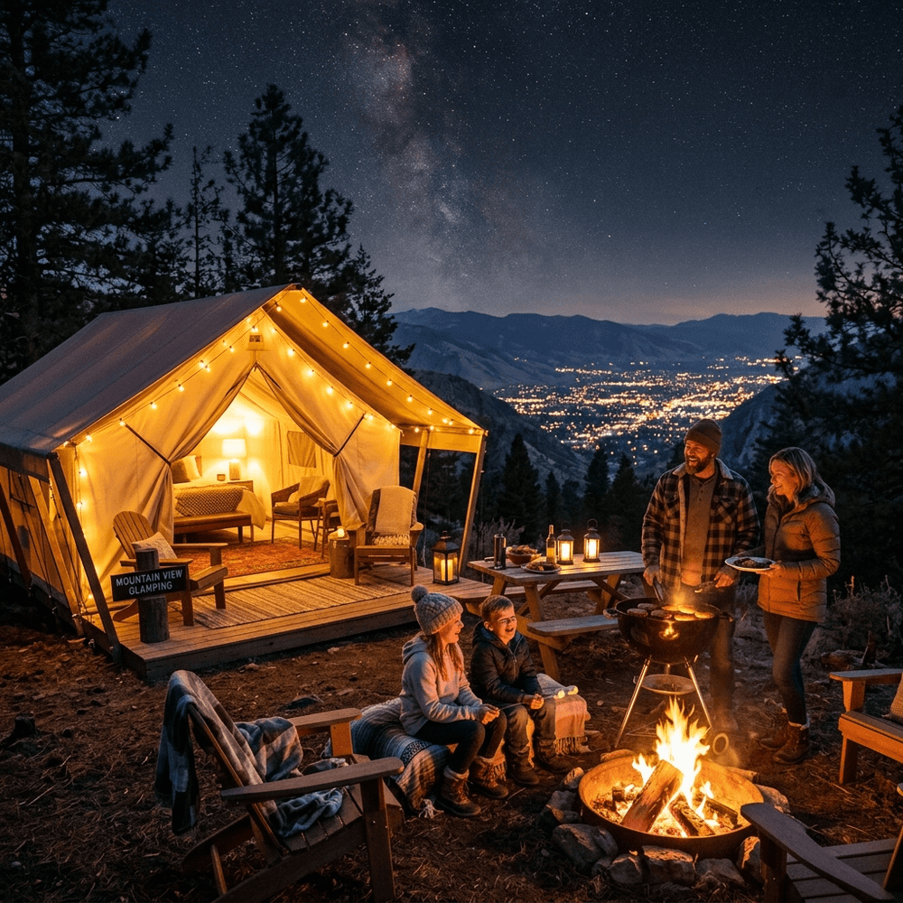
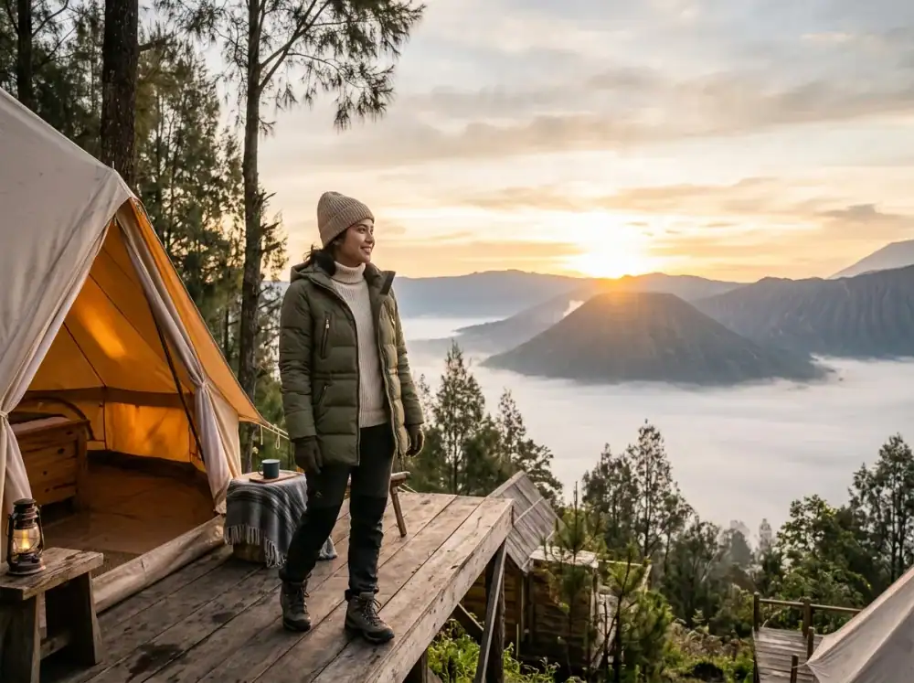
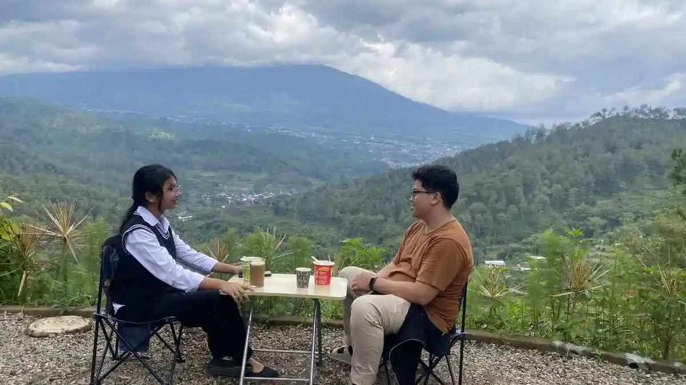
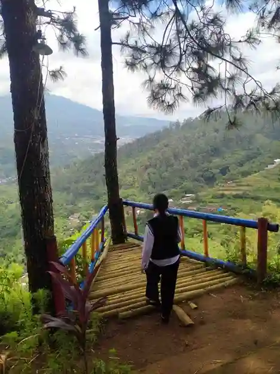

Semua Artikel Blog
Inspirasi dan panduan terbaik untuk petualangan alam Anda

Tips Ampuh Melindungi Diri dari Gigitan Serangga Saat Kemping di Batu
Jangan biarkan serangga merusak istirahat Anda. Simak perlindungan paling efektif untuk mencegah gatal dan serangan agas kemah di tanah Batu perbukitan ini.

Tips Memilih Sepatu Hiking yang Tepat untuk Berkemah di Batu
Pastikan langkah Anda aman dan nyaman di medan pegunungan. Ketahui cara terbaik memilih alas kaki untuk kemping di Kota Batu.

Kemping di Masa Pensiun: Menikmati Usia Emas dengan Nyaman di Alam Terbuka Batu
Siapa bilang kemping hanya untuk anak muda? Temukan panduan dan tips lengkap menikmati masa pensiun liburan ramah lansia di area Batu Sunrise Camp.

Glamping vs Kemping Tradisional: Mana yang Cocok Untuk Liburan Anda?
Bimbang memilih antara Glamping yang mewah dan Kemping Tradisional yang otentik? Temukan kelebihan, kekurangan, dan gaya liburan alam yang paling pas untuk Anda.

Panduan Fotografi Milky Way Saat Kemping: Cara Mengabadikan Galaksi dari Batu Sunrise Camp
Pelajari teknik dasar dan setting kamera untuk memotret Bima Sakti. Lengkap dengan tabel peralatan, tips komposisi, dan panduan editing di Lightroom.

Panduan Hiking Pemula di Batu Malang: Mulai dari Nol hingga Puncak Bersama Komunitas
Panduan lengkap hiking perdana di Batu Malang: jalur trekking terbaik, persiapan fisik, checklist perlengkapan wajib, hingga tips menikmati sunrise di puncak.

Outbound Team Building Seru di Batu Sunrise Camp: Solusi Terbaik Gathering Kantor yang Berkesan
Alam pegunungan Batu menjadi latar terbaik mempererat kekompakan tim. Temukan pilihan aktivitas outbound, fasilitas korporat, dan manfaat nyata bagi tim Anda.

Seni Memasak Bersama Keluarga di Alam: Aktivitas Bonding Paling Berkesan di Batu Sunrise Camp
Temukan mengapa memasak bersama di alam terbuka adalah aktivitas bonding terbaik. Dilengkapi resep simpel, tips aman, dan momen makan malam di bawah bintang.

Ulang Tahun Edukatif: Rayakan Pertambahan Usia Buah Hati dengan Konsep Glamping Alam
Bosan perayaan ulang tahun di restoran biasa? Coba konsep pesta tematik alam terbuka lengkap treasure hunt, potong kue, dan menginap glamping mewah di Batu.

Lepaskan Diri dari Gawai: Panduan Digital Detox Sempurna di Batu Sunrise Camp
Saatnya puasa notifikasi. Bebaskan pikiran Anda dengan paket relaksasi dari jeratan gawai elektronik dan rasakan kesunyian hakiki membaca buku di rimbunnya pinus.

Syahdunya Glamping di Musim Hujan: Menikmati Alam Batu Tanpa Takut Kebasahan
Jangan biarkan musim hujan membatalkan rencana liburan Anda. Rasakan pengalaman syahdu menikmati glamping mewah hangat dan kedap air di Batu Sunrise Camp.

Healing Maksimal: Relaksasi Yoga Pagi Berlatar Pegunungan di Batu Sunrise Camp
Kembalikan ketenangan dan kesegaran batin Anda melalui rutinitas stretching subuh bersama panorama sejuk pegunungan di depan glamping Anda.

Destinasi Pet-Friendly Terbaik: Serunya Mengajak Anabul Kemping di Batu Sunrise Camp
Tidak perlu meninggalkan anabul di pet shop! Nikmati glamping mewah dan seru bersama dengan anjing atau kucing kesayangan di Batu Sunrise Camp.

Pengalaman Glamping Romantis di Batu Sunrise Camp: Cara Baru Rayakan Momen Spesial
Rayakan hari jadi Anda bersama pasangan di Batu Sunrise Camp. Glamping mewah dengan view city light dan gemerlap bintang malam menunggu Anda.

Panduan Seru Barbeque Malam Kamp di Batu Sunrise Camp: Hangatkan Suasana Keluarga
Menikmati malam di Batu Sunrise Camp tidak lengkap tanpa barbeque. Simak panduan dan tips seru BBQ bersama keluarga ditemani city light Malang.

Fasilitas 'Kantor Alam' di Batu Sunrise Camp: Solusi Ampuh Buat Kamu yang Burnout Kerja!
Membayangkan menyeruput kopi hangat memandang pohon pinus, sementara pekerjaan terpantau lewat WiFi kencang, bukanlah sebuah dosa besar.
Capek Kerja Bagai Kuda? Intip Fasilitas 'Kantor Alam' di Batu Sunrise Camp!
Jangan sampai Anda mencapai titik burnout total. Nikmati work-life balance dari tenda mewah dengan view gunung, fasilitas air hangat, dan WiFi kencang.

Kerjaan Numpuk Bikin Burnout? Saatnya Self-Healing di Batu Sunrise Camp!
Jangan tunggu sampai benar-benar tumbang gara-gara burnout. Segera rencanakan liburan self-healing tanpa ribet dengan fasilitas glamping premium di Batu Sunrise Camp sebelum kehabisan spot.

Nikmati Sensasi Camp Mewah di Batu Sunrise Camp Sebelum Slotnya Full!
Menunda momen istirahat berkualitas bersama keluarga atau pasangan hanya akan membuat rasa lelah makin menumpuk. Booking sekarang!

Panduan Memilih Matras Kemping Agar Punggung Tidak Nyeri Saat Bangun
Sleeping Bag mahal tak akan berguna tanpa pondasi alas matras yang baik. Ini rahasia mendapatkan kasur busa setara penginapan di dalam tenda Anda.
Tips Membawa Bekal Sayuran Segar Saat Kemping Tanpa Kulkas
Tak selamanya menu kemping hanya mie instan dan sosis. Ketahui trik rahasia menyimpan seledri dan sawi awet segar di alam bebas Gunung Batu.

Cara Praktis Mencegah Tenda Tergenang Air Hujan di Gunung Batu
Jangan biarkan liburan alam Anda berubah menjadi wahana kolam renang berlumpur. Teknik parit dan setel flysheet rahasia ada di artikel ini.

Rekomendasi Lampu Penerangan Tenda Anti Silau untuk Tidur Nyenyak
Cahaya putih terang LED justru merusak hormon tidur Anda di alam bebas. Kenali jenis pijar lentera kuno yang membiusnya.

Panduan Lengkap Meracik Kotak P3K Darurat Kemping di Hutan Pinus Batu
Luka gores ranting dan masuk angin adalah musuh utama pekemah. Ketahui 7 obat anti repot yang sangat diandalkan nyawa kemah Anda.

Rekomendasi Camilan Malam Penghangat Tubuh di Samping Api Unggun
Simak resep kudapan dan minuman luar ruangan asyik yang tidak hanya mengenyangkan lambung, melainkan menaikkan suhu tubuh Anda belasan persen.

Cara Memilih Sleeping Bag Tepat untuk Suhu Udara Malam di Gunung Batu
Tidur pulas di alam terbuka sangat bergantung pada sleeping bag yang membalut Anda. Pahami ragam bahan insulasi pelindung hawa anjlok ini.

Tips Menjaga Baterai Kamera dan HP Agar Awet Saat Kemping di Cuaca Dingin
Suhu nol derajat pegunungan Batu menyedot energi Lithium-Ion dalam hitungan jam. Pelajari metode ekstrem menjaga daya elektronik Anda.

Manfaat Meditasi Alam di Pegunungan Batu untuk Hilangkan Stres Kerja
Rasakan manfaat selebrasi ketenangan sejati. Pelajari panduan meditasi kesadaran singkat berlatar belakang udara sejuk.

Cara Meracik Kopi Pegunungan yang Nikmat Saat Suhu Turun di Batu
Perkaya ritual kemping dengan racikan kopi kental buatan tangan. Kenali perlengkapan portabel tanpa beban berlebih.

Cara Efektif Mengatasi Kejenuhan Anak Saat Kemping di Batu
Ketahui strategi jitu agar anak asyik dan tidak bosan selama mengikuti liburan kemping keluarga di kawasan pegunungan.

Panduan Memilih Pakaian Kemping Tepat Saat Musim Hujan di Batu
Jangan biarkan terjangan hujan menghentikan hobi kemping Anda. Kuasai sistem pakaian anti air tiga lapis wajib ini.

Panduan Lengkap Solo Camping Aman dan Nyaman di Batu Malang
Rancangan keberanian wisata mandiri pencarian jati diri yang sepenuhnya terjalin dengan persiapan protokol aman liar.

Cara Ampuh Mengatasi Udara Dingin Saat Kemping di Pegunungan Batu
Jangan sampai suhu jatuh merusak liburan, bekali diri dengan pemahaman teknik 3 layer perlindungan suhu badan.

Rahasia Mendapatkan Foto Sunrise Terbaik Saat Kemping di Batu Malang
Panduan teknis bagi pemula untuk menembak momen golden hour fajar di dataran tinggi.

Mengapa Api Unggun Wajib Ada Saat Event Kemping Keluarga di Batu?
Temukan rahasia kelenturan psikologis di balik teater alam di tengah kemping keluarga Anda.
Tips Tepat Mendirikan Tenda Kemping yang Kokoh Hadapi Angin Pegunungan Batu
Panduan teknis dan dasar keselamatan menggunakan tali pancang agar tenda Anda kuat semalaman.

7 Ide Permainan Outbound Seru Saat Kemping Rombongan & Keluarga
Kegiatan peretas kecanggungan (ice breaking) penambah gelak tawa interaktif saat event lapangan luas.
Keseruan Tak Terlupakan: Paket Berkemah Makrab Siswa Bisnis Digital di Batu Sunrise Camp
Experiential learning, outbound, view city light, dan sunrise magis untuk Makrab mahasiswa Bisnis Digital.

Cari Ground Luas? Pilihan Paket Camping Batu Sunrise Camp Malang
Solusi event rombongan besar dan outbound dengan area lapang, instruktur berpengalaman, dan view memukau.
Tips Kemping Aman & Nyaman di Musim Hujan
Mempersiapkan tenda anti badai dan perlengkapan hangat agar tetap estetik dan elegan.
5 Manfaat Rahasia Liburan Kemping Bersama Keluarga
Mengurangi screen-time anak sedari dini dan membangun ikatan keluarga lewat alam bebas.

Rekomendasi Menu Santap Alam Praktis & Lezat
Tinggalkan indomie sejenak, ini cara memasak daging grill ala glamping sultan yang simpel.

Checklist Lengkap Peralatan Kemping Pemula
Jangan sampai kedinginan atau kelaparan. Ini standar bawaan yang wajib jika kemping mandiri.
Prinsip 'Leave No Trace': Kemping Tanpa Jejak
Panduan pelestarian alam bagi pecinta kemping agar surga dunia kita tetap terjaga.

Panduan Memilih Lokasi Kemping Terbaik di Batu Malang
Jangan asal pilih spot! Pelajari kriteria lokasi ideal agar pengalaman kemping Anda sempurna dan aman.
7 Aktivitas Seru yang Wajib Dilakukan Saat Kemping di Batu
Dari hiking sore, api unggun, hingga memasak bersama di udara segar pegunungan Batu Malang.
Tips Kemping Bersama Anak: Petualangan Aman & Menyenangkan
Investasi kenangan terbaik untuk si kecil. Panduan lengkap agar kemping keluarga berjalan sempurna.

Panduan Stargazing: Menikmati Langit Malam Saat Kemping di Batu
Langit malam Batu Malang adalah salah satu terbersih di Jawa Timur. Pelajari cara menikmatinya secara maksimal.
Dapatkan Update Tips Kemping Eksklusif
Jadilah yang pertama tahu tentang spot kemping baru dan promo paket bulanan kami. Hubungi kami untuk bergabung dalam komunitas pecinta alam Wisata Kemping Batu.
Hubungi via WhatsApp